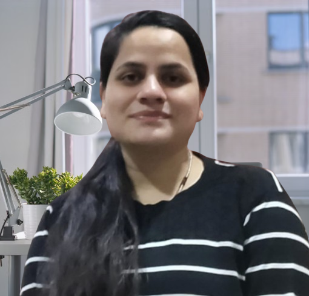

About Me

I completed my PhD in the Department of Statistics and Data Science at the Indian Institute of Technology Kanpur. My doctoral research was conducted under the joint supervision of Prof. Subhra Sankar Dhar and Prof. Shalabh. My research focuses on censored regression models under endogeneity using robust estimation methods.
I am deeply passionate about research and continuous learning, and I thrive in intellectually challenging environments. I am currently seeking postdoctoral positions and research-oriented roles in econometrics, statistics, and data science where I can further develop my research expertise and contribute meaningfully to ongoing projects.
Research Interests
Publications
Journal Articles
Censored Regression Models with Endogeneity: A Survey
Journal of the Indian Society of Agricultural Statistics, 2025, 79(2), 95-104.
[Link]Preprints
L-Estimation Approach to Tobit Models with Endogeneity and Weakly Dependent Errors
Under review.
[arXiv]Book Chapters
Regression Modelling Under Lp-Norm Loss Function
Advances in Mathematics Research, 2023, Editor: Albert R. Baswell, Nova Science Publisher, pp. 121-144.
[Link]Education
Doctor of Philosophy
Statistics
Department of Mathematics and Statistics
Indian Institute of Technology Kanpur, Kanpur, India
Master of Technology
Industrial Mathematics and Scientific Computing
Department of Mathematics
Indian Institute of Technology Madras, Chennai, India
Teaching Experience
Teaching Assistant
Tutor
Assistant Tutor
Contact Information
Primary email is the preferred way to contact me.
Mailing Address
Department of Statistics and Data Science
Indian Institute of Technology Kanpur
Kanpur, India
A list of publications can also be found on my Google Scholar page and ResearchGate.